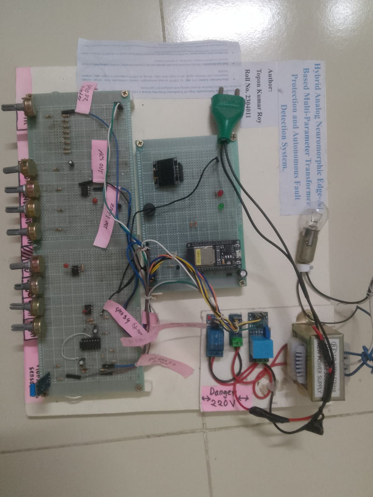
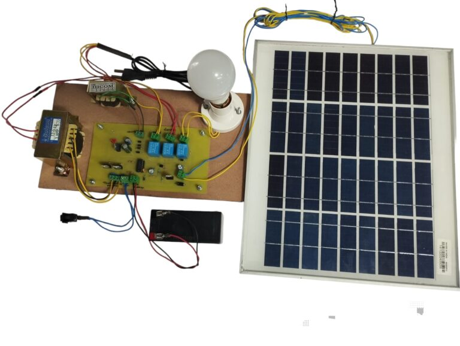
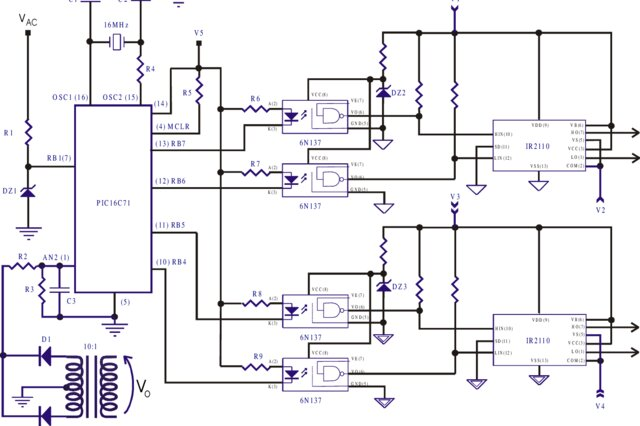

This project is designed to monitor transformer conditions and provide protection against abnormal voltage, current, temperature, and vibration.
Technologies used:

This project converts DC power into AC power using power electronic switches. The inverter can generate a 50 Hz AC output using PWM techniques.
Technologies used:

This project controls the AC output voltage by changing the firing angle of an SCR. It demonstrates the basic operation of AC voltage control.
Technologies used: